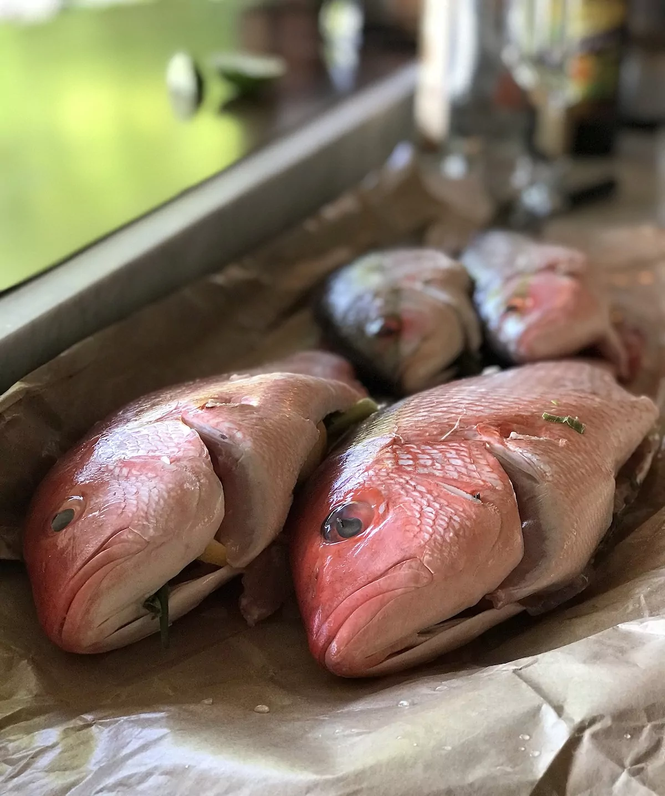

V
Vivaneau
Le terme Vivaneau est un nom vernaculaire souvent associé au poisson Lutjanus vivanus (vivaneau soie). En réalité, ce mot est également utilisé pour plus d’une centaine d’autres espèces de poissons appartenant à des genres différents de la famille des Lutjanidés, que l’on retrouve dans toutes les eaux tropicales du monde.
Très apprécié en cuisine, le vivaneau est sédentaire et territorial, il a besoin d'un abri qu'il ne quitte que pour se nourrir ou se reproduire.
Il consomme une grande variété de proies, autres poissons, crabes, crevettes.
